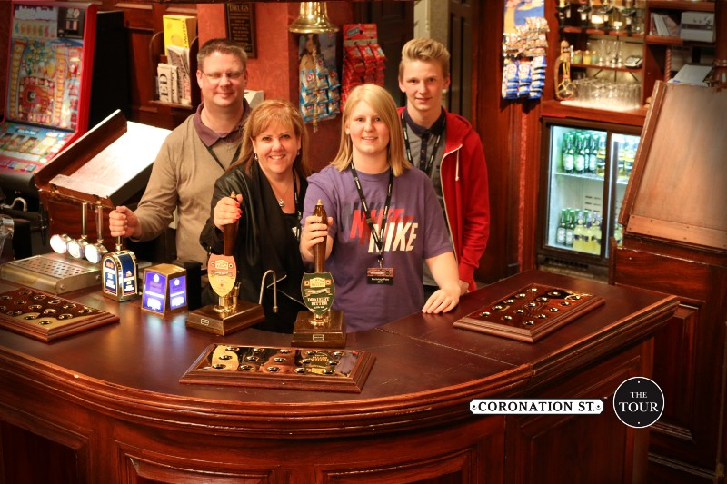

Coronation Street: The Tour
Published: 1st July 2014
On Saturday 28th June 2014 I was lucky enough to be taken to the Coronation Street Tour and was able to walk along the cobbles at the world famous Quay Street set.
The first part of the tour was inside the set of Coronation Street looking at a few of the sets used by the stars of the show, such as Carla Connor’s flat, The Platt’s house and the Rovers Return. It was great to see the sets in real life, seeing how small they were. While in the Rovers Return set I had a photo behind the bar ‘pulling a pint’.

As well as seeing the some of the sets we got a sneak preview of the actors and actresses dressing rooms, the clothes in the costume department and some of the props used for filming. The prop that was most weird to hold was the bricks that were used when filming the tram crash for the 50th Anniversary Episode, which were made of polystyrene. The only disappoint with this part of the tour was that pictures weren’t allowed to be taken, which none of us really knew why.
The second and final part of tour was walking along the cobbles themselves, looking down the street where many famous actors and actresses stood and filmed Coronation Street for many years. This was by far the best part of the tour as pictures could be taken and I was able to walk up to the many famous buildings on the street, such as the Kabin, Underworld, Websters’ Auto Centre, The Rovers Return, Audrey’s, Street Cars and Roy’s Rolls.
The final stop on this spectacular tour was the medical centre can you believe as this is where many souvenirs could be brought and the pictures that were taken behind the bar of The Rovers Return could be purchased. From the medical centre I brought two Coronation Street tour key rings and the picture from the Rovers Return.
Overall, I thoroughly enjoyed the tour around Coronation Street’s iconic Quay Street set. I would like to thank my Father and Kimberly for taking me to the Coronation Street Tour, it was fantastic birthday treat!